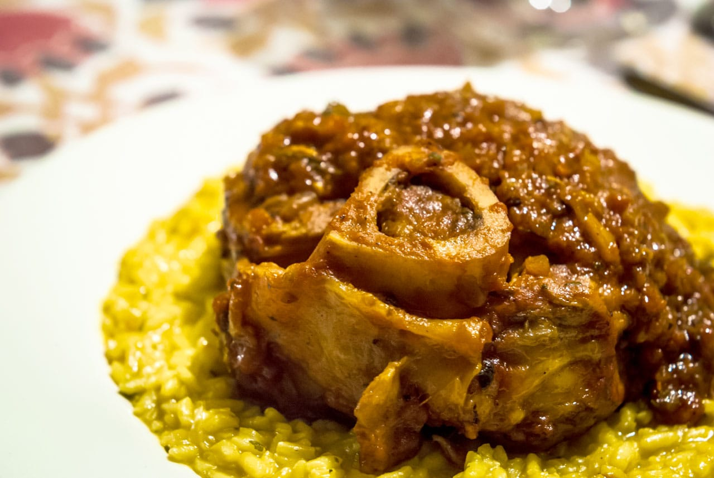

Ossobuco

Ossobuco is a traditional Italian dish made by braising veal shanks in stock with wine and other ingredients, garnished with a gremolata made of fresh herbs, oil, and garlic. Ossobuco is normally served with polenta or risotto alla milanese.
Ingredients
Ossobuco:
- 2 - 1 pound veal shanks
- 1/4 cup all-purpose flour
- 1/4 cup butter
- 2 cloves garlic, crushed
- 1 large onion, chopped
- 1 large carrot, chopped
- 2/3 cup dry white wine
- 2/3 cup beef stock
- 1 can diced tomatoes
- salt and pepper to taste
Gremolata:
- 1/2 cup chopped fresh flat lead parsley
- 1 clove garlic, minced
- 2 teaspoons grated lemon zest
Steps
- Dust veal shanks lightly in flour
- Melt the butter in a large skillet over medium to medium-high heat. Add the veal, and cook until browned on the outside. Remove to a bowl, and keep warm.
- Add two cloves of crushed garlic and onion to the skillet; cook and stir until onion is tender.
- Return the veal to the pan and mix in the carrot and wine. Simmer for 10 minutes.
- Pour in the tomatoes and beef stock, and season with salt and pepper.
- Cover, and simmer over low heat for 1 1/2 hours, basting the veal every 15 minutes or so. The meat should be tender, but not falling off the bone.
- In a small bowl, mix together the parsley, 1 clove of garlic and lemon zest. Sprinkle the gremolata over the veal just before serving.
Back